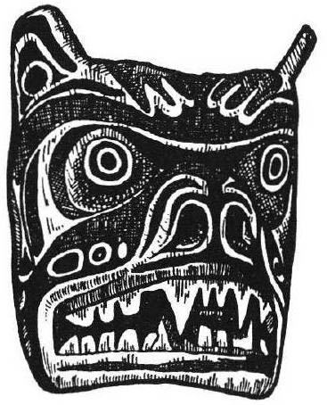

In the spring of 1993, I began to dream about bears. Over a long period, bears took a central place in both my dreams and my waking life. I had spent much time in the forest, but had never encountered a bear in the wild. Now, each foray into the wilderness made me certain that I would come upon a bear. The conclusion to the encounter (bear eats me or bear walks away) was never known, but it was the fact of an encounter—facing the bear—that filled me with terror. This fear was laced with a loving fascination and stories and poems about bears began to spring whole from my unconscious. In my first bear dream:
I am walking through a wet forest, stepping carefully over limbs and roots and thinking I shouldn't be out here alone, as I might trip and injure myself. As I come down a path, there is an animal that looks like a fat, bulbous snake lying on its back in a clearing in front of me. I think it might be dead or injured, so I stomp my feet hard on the ground, over and over, to see if it reacts. It gets up: it's a fat reptile with a long snout and two tiny rear legs; it comes toward me like a friendly, anxious puppy, but I am throwing rocks and sticks at it, still stomping, frantically trying to keep it away from me. Then, down the trail from the reptile, a figure emerges from the bushes. It is a huge, dark bear standing upright. I am afraid but also relieved, hoping the bear will chase the reptile and that I can escape.
Later in the dream, someone identifies the reptile as a "turtle without a shell."
The bear was an emerging figure in my life and self, about to engage or transform this turtle without a shell. The turtle was not only unprotected, but puppy-like, as I have been in my compulsion to please others. I found reference in Carl Jung's works to the stomping of feet as a way to summon "the mothers," and saw that my stomping had summoned a strong being to deal with a crisis.
In my second bear dream, a huge grizzly watched me with curiosity, but did not approach. So one afternoon, I heard social ecologist Paul Shepard read from his book The Sacred Paw: The Bear in Nature, Myth, and Literature,
"In their social interactions bears seem more like humans whose life is always on the knife edge between the soliloquy of the self and the chorus of the group...
Who better to demonstrate to us autonomy and its special style of attention and introspection than the social yet irascible, supreme recusant, Arctos?"
In the third stanza of her poem "Many Winters" [Shepard writes] Nancy Wood speaks of this lesson from the bear:
There is the young girl in me traveling west
With the bear which taught me to look inside.
The bear stood by himself and said,
"There is a time for being alone
So that you do not take on
The appearance of your friends. There is a time for being at home
with yourself."
I realized then that it was my self that I both feared and longed to encounter. In the first dream, the symbol of inner strength versus defenselessness underscored my growing feeling that I had no access to my inner core. My relationship with bears had me writing again—about forests, animals, about, deserts, as though the bear were steering me back to myself and my connection with the earth. In my third bear dream:
I am in Alaska with Gary Snyder and George [my then-partner]. We are looking around for bears near our cabin, not expecting to see any yet. But Gary comes running out of the woods into the cabin clearing, whispering, "Grizzly!" We all start running toward the cabin. We are closing all the doors, the image of the grizzly running full speed, huge, permeating my mind and body. As we get everything closed up, we look out a big picture window and see the bear lying on the ground, or crouched, a few yards away next to a lake. It looks as though he is eating a person, a woman, wearing white clothes and a wool cap. I keep looking again, thinking, "Is he really eating a person? Why didn't she run?" His muzzle is moving, but I can't see her body where he is eating it. It is unmistakable—he is lying on her, her pale hands are dangling in front of her in the water. I do not know who she is, but think it must be someone we all know.
Gary Snyder's presence I associated with his retelling in "The Practice of the Wild" of the widespread native tale "The Woman Who Married a Bear." The woman was me, my hands dangling in a lake (deep consciousness) taken unaware, or perhaps unafraid. The bear had come into my life and consumed me; I was now part of the bear.
I began to research the relationship between women and bears in mythology and folklore, and found many connections in modern literature and art as well. To further explore this relationship, I placed queries in Dream Network and other publications, asking women for their dreams and thoughts about bears, hoping to find some confirmation of the potency of this symbol for me as a woman.
What I have found, in nearly 100 responses, is that the bear is indeed a rich symbol for women, signaling transformation, the rise of the inner ("wild," strong) self, and a deep connection to the earth. Here are three of Kari's dreams:
John and I are at a lake. A storm comes in. The winds are dramatic, blowing up and around. I hide by some boulders, huge and sculpted. Then a Native American friend comes up and says we should follow him. He leads us up a cranny in the rock—it is an ancient (special) path. Near the top, he stops and picks up an object. "It's a bear paw," he says, and shows it to me. We go on. Around the corner we see the she-bear, a grizzly. She is almost dead.
I'm coming back to my hotel, a big, old-style building in New York City. There is a man cajoling a huge grizzly bear just outside the front door. When I approach, the man goes too far. The bear turns, and, with one swipe of her claws, kills him. I'm afraid of the bear's size and raw power, but I also understand that she did what was natural. The man should have treated her with more respect.
We are filming a movie in a cave area. It's rocky, full of stalactites and stalagmites. One scene is with bears, so two men dress in bear suits. They look thin and scruffy, but real. Then, halfway through the shooting, I'm under a ledge with two other people. It's dark and smoky. We come around the corner to two real bears. We're afraid. We decide to walk by on our hands and feet, pretending to be bears ourselves. We do, and they leave us alone. I think then what it would be like if one of the bears wanted to mate with one of us. It's a scary thought—it might claw us—but also alluring. I go away from the others, on a dock by a small boat. I imagine mating with the bear. It goes very deep inside me. It feels good, as though it's really happening.
These and many other bear dreams told Kari "that we humans need to study with the bear, that she has something to teach us. ...She calls for respect; when not respected, she is deadly. The bear dreams have to do with claiming my own power and remind me of my intuitive connection to the natural world, of the importance of that connection, of the need for great respect toward nature. I feel they are calling me out to do my job for the Earth."
Diane said that her first bear dream was the kind of dream "that tells you your life has just changed forever."
I am in the dining room of the farmhouse where I grew up. I have no family: the house is full of people I do not know. The only familiar face is that of my lover, the same one who is with me in waking life. He brings me a box and then he leaves the room. In the box is meet: raw, bloody meat, not nice and saran-wrapped like meat from the market. One of the dream people says I should eat it right away, before it goes bad.
I am not a vegetarian in this dream, but when I think of eating that meat, my belly shrinks in horror; this is definitely meant for another purpose. I tell the dream people that I don't want to eat it. They feel that I am being precious and they leave me. I do not care.
I put the box on the floor in a safe place. The next day, I come to look at the meat and it is moving and growing fur. In a few days, it has grown into a full-sized white she-bear. She greets me with great affection and we roll and play together on the floor.
This is no pet animal I am playing with; this is a conscious entity who is older and more spiritually adept than I am. She will be a mother/ teacher for me. She treats me with great tenderness and I love her and trust her completely.
"I wake up loving bears. Yesterday, I had no thoughts of bears at all, to love them or not. Today, I love them. I have stopped wondering about the dream. I am full of Bear now: her huge warmth is totally inside me and I do not worry about having done right."
Tara wrote:
"My first memorable bear dream came several months ago It seemed as though I were watching a scene from medieval times wherein....
....a beautiful maiden was alone in the forest with her lover. Innocently she disrobed and revealed herself to him in all her naked beauty, but he was shocked rather than enamored of what she had shown him of herself. This was a reaction she did not expect, and in that moment she knew shame and began to run, heartbroken, through the forest. Now I became her, fleeing through the forest, trying to escape the shame of what I had not known heretofore to be shameful, when I realized that I was being pursued by a large, golden, powerful bear. I was terrified and ran faster, screaming for my other. I came to a river and splashed in, taking refuge in an empty log at the river's edge, believing that the bear would be distracted by the fish in the river, which he would undoubtedly prefer to me. I was right, he was distracted."
and so the dream ended.
"In the next dream, I was in my back yard, making my children something to drink. Just as I am about to pour out the concoction, I notice a large, lumbering bear coming into my yard from behind me, on the south side of the lawn. Fortunately, the bear got tangled up in my clothesline and I was able to escape into the house, again yelling for my mother, although I knew it was my husband I sought. I got to him, and we stealthily crept into the garage to see if the bear was still about, when all at once I saw my neighbor to the north mount the bear and ride him off to the east, as if he were a horse."
Tara explains, "...My mother left my father after 40 years of marriage, and I was left wondering whether I still needed to follow the unconscious pattern she had established for me—marriage, children, and all that entails—now that she had chosen to leave it. I began to question everything.
Tara met a man "who seemed to embody all the 'spiritual' ideals to which I aspired" and had a brief affair with him. When it was over, she told her husband, whom she realized she still loved and wanted to stay with. "I just no longer liked what I had become in relation to my husband and I needed to feel that part of myself that this other man helped me to recognize."
"In the first dream, I revealed ...my naked truth. In the second dream ... my position as mother and caregiver is ...akin to the nurturing aspect of the bear, and yet I am afraid of this role also. The neighbors to my north are a rather motley crew, and... in my dreamstate they represent that shadowy, untamed aspect of my nature which, in my pursuit of greater consciousness, I seek to embrace."
When Ingrid saw my call for bear dreams in DNJ, she debated whether to write to me and saw a black bear at the entrance to her garden, the only time she had seen one in ten years of living there. Her four bear dreams represented for her the process of transforming her "instinctual energy."
I see a large, very powerful bearlike animal (masculine) threatening, injuring, and killing people. First, I try to hide in a huge building, but then realize there is no place to hide from it. I see the animal trying to pry open a wooden panel in a wall using an ax pushed underneath. I take hold of the ax and suddenly the animal towers over me. It no longer threatens, but speaks to me from mind to mind. I know I still must kill it and it waits for me to do so. With the ax, I hack at it but still cannot quite make the final blow. Then it takes the ax from my hand and finishes itself off. It is somehow not gruesome, but natural and proper.
Her interpretation of the dream was this:
"... I associate the huge building with society and my own body as part of it, the bear with the powerful instinctual energy aspect of myself and society as well; it must be 'tamed' and used constructively, or it becomes dominating, frightening, and drives consciousness underground into hiding. I must bring this power to light, transform it from that which threatens me and which I fear to face—not suppress it. Only by facing it, recognizing it as an inseparable part of my nature in need of redemption, will I be able to live fully. "
Teresa feels her bear dreams began a process for her of "reclaiming my relationship to my inner wild and intuitive self and my artistic and spiritual self." A wildlife biologist, Teresa went through "a series of failures and rejections in my attempts to succeed in the science-oriented and technological world." She also went through a crisis in her marriage, which she feels she nearly destroyed.
"I have since come to realize that this has been a pattern in my relationships: I didn't know how to be true to my wild self (it went underground), so I would reach the point where I felt that I had to leave to be whole again."
David (my husband) and me again. We were in a big house (like a Forest Service bunkhouse) with many empty rooms. A black bear was trying to get in and we were trying to keep him out. We were afraid of it. I yelled to scare him away at first, but he kept coming back. We tried blockades, but the bear's muzzle was strong.
Teresa had many dreams of bears chasing her, including another chase into a bunkhouse, where, alone this time, she climbed into a loft where she could put down a door in the floorboards. The bear roared up through the floorboards and Teresa was sure that she would die.
"My bear dreams symbolize the instinctive, angry, and completely unpredictable power deep within."
Anne's bear dreams related to dreams she had had earlier about an Indian warrior. "From time to time, I saw an Indian warrior face in my dreams. The dream Indian, while not hostile, was not cordial either, and was probably a Jungian archetype, though I don't like to be locked in those terms."
"Summer thunderstorm moved over the mountains and across the foothills where I live. I think I was near sleep, drowsing, and 'seeing' or dreaming of a great bear. Some time later, I dreamed of a bear standing, four paws on the ground looking at me. Beside it, a woman dressed in deerskin stood with her right hand resting on the back of the bear, also looking at me. From time to time thereafter, I seemed to see or feel them out there, protecting me. I still feel that."
"I've not dreamed of the Indian warrior since then...I feel the bear and the woman broke for me the patriarchal yoke my generation grew up with. In retrospect, I see I have been freed of it, not fighting it or connected to it, just unconcerned about it and free. Indians, while fascinating, and with whom I am always sympathetic, seemed to symbolize a repressive and possibly evil energy for me, a symbol that had nothing at all to do with real Native Americans. The bear and the woman dispelled the oppression. If there is evil energy in the world, they protect me. Then, too, I may be the woman with the bear."
Erin had a dream about being chased across a lawn by a female black bear. The bear seemed to have nothing to do with the larger plot of the dream, but (nevertheless) seemed to be the 'star,' the most important character of all. "I was struck by her lack of real aggression toward me; I awoke with the definite feeling that she had not been attacking me, but was merely trying to catch up with me. I was so convinced of this that I felt compelled to engage the bear in a journal 'dialogue'."

Erin asked the bear its name and after a long pause, the name that came into her mind was "Forebear."
"I was given to understand that she represented my clan, especially my female ancestors—their survival instincts, their pragmatism in advancing the family line this far, their protectiveness toward their own... She seemed to be telling me that I could access her canniness and strength and acquired wisdom—that they were my birthright."
Bear as transformation, as inner strength and wisdom, bear as healer, lover, friend. In reality, bears are persecuted—hunted with hounds, shot when they defend their territory; poached for their gall bladders, an aphrodisiac highly prized by Asian men, the rest of their bodies left to rot; deprived of more and more habitat every year, every day, pushing bear populations to the limit of endurance. In her essay "Undressing the Bear," Terry Tempest Williams writes, "We are creatures of paradox, women and bears, two animals that are enormously unpredictable, hence our mystery. Perhaps the fear of bears and the fear of women lies in our refusal to be tamed, the impulses we arouse and the forces we represent."
These thoughts of woman-bear-earth are echoed again and again in the dreams and stories women have shared. We hear the bears are calling us to recognize, exercise, and treasure our strength and wisdom as women and as instinctive creatures of the earth.